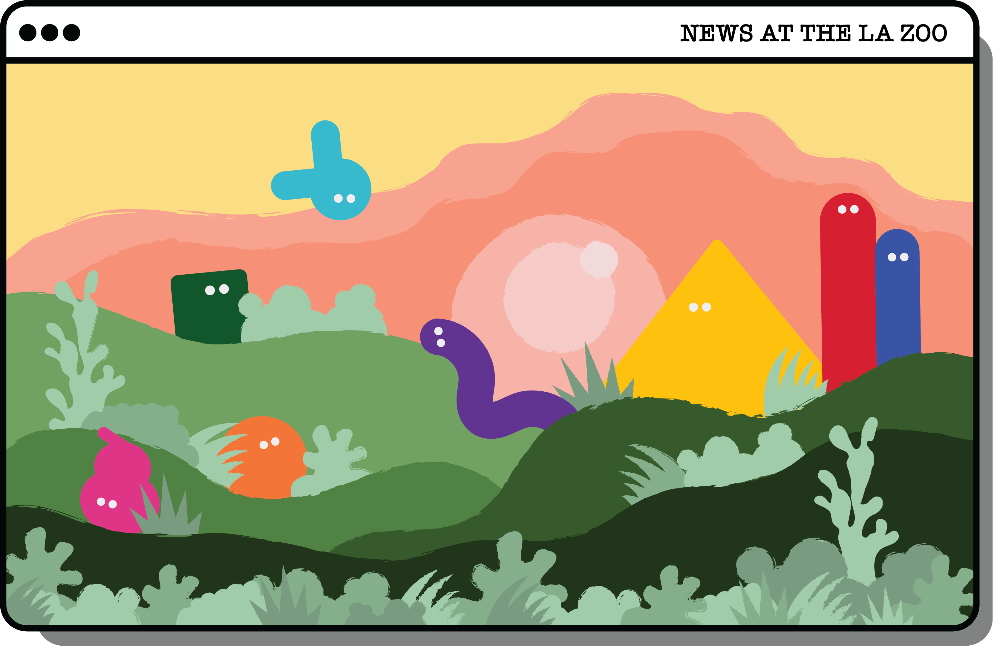
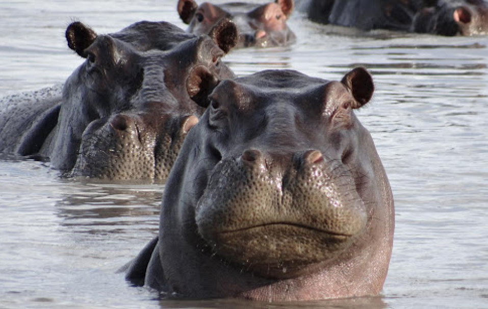
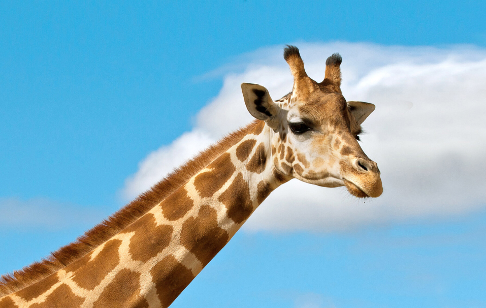
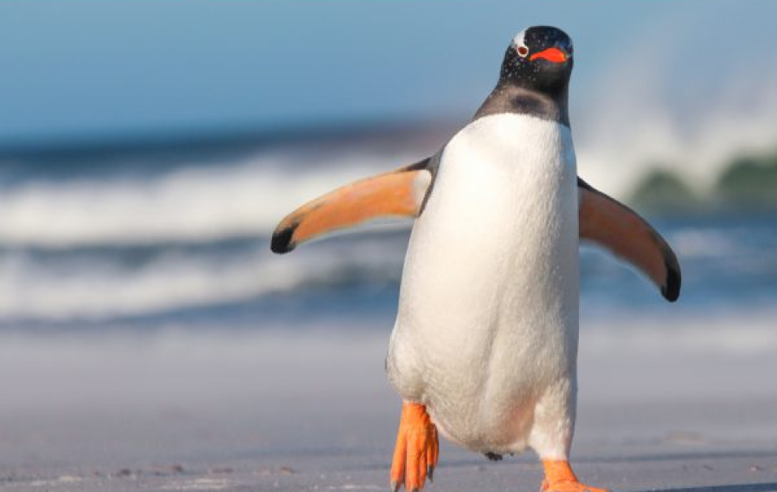
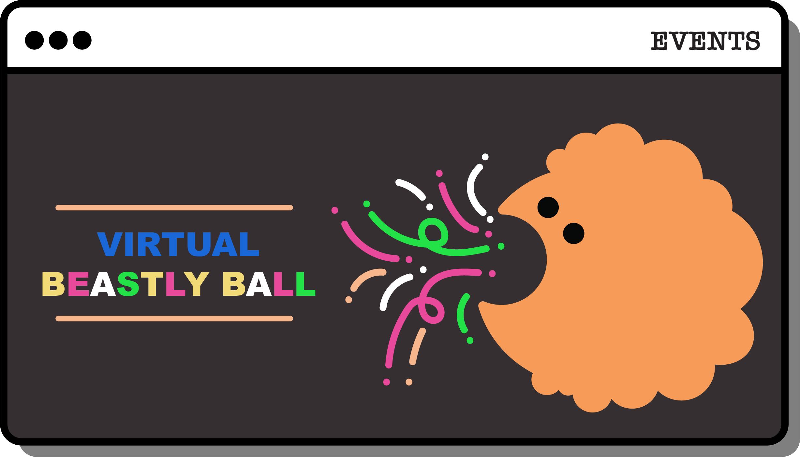
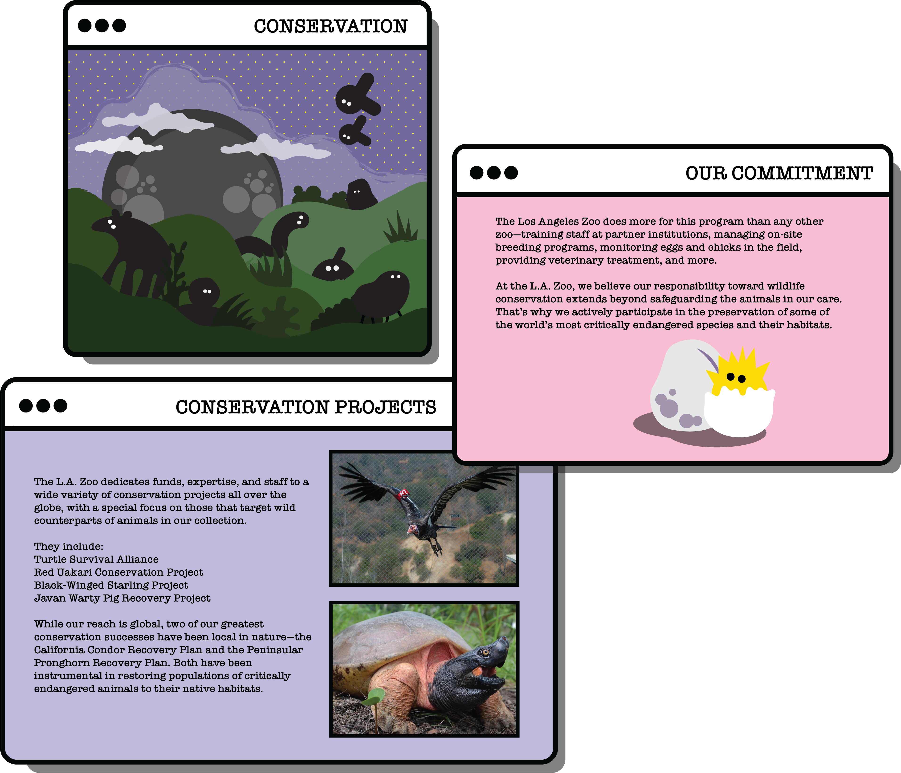

CHECK NEWS
TODAY AT THE ZOO:
The L.A. Zoo is closed until further notice following the City and State’s Safer at Home Order to help slow the spread of coronavirus. Please consider supporting ongoing daily animal care and conservation work during our closure by becoming a member or donating.

HIPPO HELP

GIRAFFE'S GAME

PLAYTIME PENGUINS


CONSERVATION
At the L.A. Zoo, we believe our responsibility toward wildlife conservation extends beyond safeguarding the animals in our care. That’s why we actively participate in the preservation of some of the world’s most critically endangered species and their habitats.